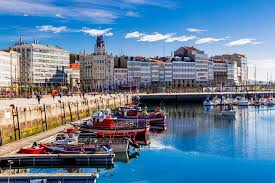
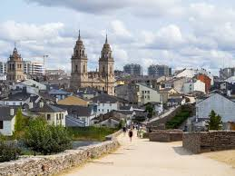
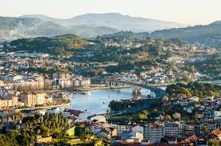

| Imagen |
Provincia |
Lugar Turístico |
Descripción |
|  |
A Coruña |
Torre de Hércules |
Faro romano y Patrimonio de la humanidad. |
| A Coruña |
Playa de Riazor |
Famosa playa urbana ideal para surfistas. |
| A Coruña |
Casco Antiguo |
Zona histórica con arquitectura impresionante. |
|  |
Lugo |
Muralla de Lugo |
Antigua muralla romana, Patrimonio de la Humanidad. |
| Lugo |
Centro Histórico |
Arquitectura medieval y calles con encanto. |
| Lugo |
Playa de las Catedrales |
Famosa playa con impresionantes formaciones rocosas. |
|  |
Pontevedra |
Casco antiguo de Pontevedra |
Zona peatonal con plazas y edificios históricos. |
| Pontevedra |
Isla de la Toja |
Conocida por sus aguas termales y balnearios. |
| Pontevedra |
Pazo de Oca |
Un magnífico ejemplo de jardinería y arquitectura. |
|
Ourense |
Termas de Ourense |
Famosas aguas termales en la ciudad. |
| Ourense |
Puente Romano |
Puente histórico sobre el río Miño. |
| Ourense |
Catedral de Ourense |
La catedral es un icono de la ciudad. |